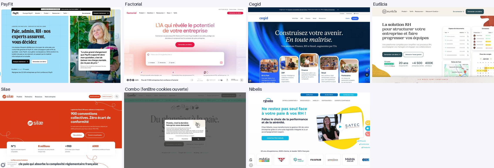

Les huit sites parlent de conformité. Aucun ne parle de seuils d’effectif ni d’obligations annoncées avant qu’elles s’appliquent. C’est votre élément le plus distinctif : à garder bien en vue.
Étude pour Teamora · 22 novembre 2026
Les pages d’accueil de huit éditeurs (Lucca, PayFit, Factorial, Cegid, Eurécia, Silae, Combo, Nibelis) relevées élément par élément, puis comparées à votre site. Personio et Sage bloquent les visites automatisées : ce qu’on en sait par d’autres sources est en fin d’étude.
Les huit sites parlent de conformité. Aucun ne parle de seuils d’effectif ni d’obligations annoncées avant qu’elles s’appliquent. C’est votre élément le plus distinctif : à garder bien en vue.
Nombre de clients (8 sur 8), témoignages (8 sur 8), notes d’avis (5 sur 8), juste sous les boutons. Vous ne pouvez pas encore les avoir : il faut les remplacer par des preuves honnêtes (vrais écrans, chiffres du produit, un visage).
Chez eux, « démo » veut dire rendez-vous commercial ; l’essai demande une inscription. Votre démo s’ouvre sans formulaire : c’est un avantage à dire plus fort.
Un vrai écran du logiciel, la réponse à « et ma paie ? », et une indication de prix (« gratuit pendant les tests »). Les trois se règlent en une demi-journée.
Chiffres de résultats invérifiables, IA en titre, bandeaux promotionnels, « conformité garantie ». Ils servent les gros éditeurs et exposeraient un nouvel acteur.
Les blocs qu’on retrouve, dans cet ordre, sur la plupart des sites. La barre indique sur combien des huit sites le bloc est présent.

Une ligne par élément. Pour chaque site, ce qu’on trouve sur sa page d’accueil ; puis la fréquence, l’importance que je lui donne pour convaincre une PME, l’état de votre site et ce que je vous conseille d’en faire. La grille défile horizontalement.
| Élément | Lucca | PayFit | Factorial | Cegid | Eurécia | Silae | Combo | Nibelis | Fréquence | Importance | Votre site | Pour Teamora | Regard critique |
|---|---|---|---|---|---|---|---|---|---|---|---|---|---|
| Haut de page | |||||||||||||
| Titre qui promet un résultat concret | ~« L’humain a de la ressource » | ✓Nos experts assurent, vous décidez | ~Promesse vague autour de l’IA | ~« Construisez votre avenir » | ✓Structurer, faire progresser | ✓900 conventions, zéro écart | ✓Du planning à la paie, sans ressaisie | ✓Ne restez pas seul | 5/8 +3 partiels | ~Trois verbes ; la promesse est dans la 2ᵉ carte | À adapter | Les titres qui marchent disent ce qui disparaît ou donnent un chiffre vérifiable : « Du planning à la paie. Sans ressaisie. », « 900 conventions collectives. Zéro écart de conformité. ». Les titres d’ambiance (« Construisez votre avenir », « L’IA qui révèle le potentiel… ») ne disent pas ce que fait le produit. « Recruter, gérer, accompagner. » décrit le périmètre ; ce qui vous distingue (être prévenu avant chaque obligation) n’arrive qu’en deuxième carte. Le remonter en sous-titre, juste sous les trois verbes. | |
| Deux boutons : démo et essai (ou tarifs) | ✓Essayer · Demander une démo | ✓Essayez · Demandez une démo | ~Démo seule | –Contact | ✓Démo · Essai gratuit | –Solutions · Trouver un partenaire | ✓Essai · Démo | ~Contactez-nous | 4/8 +2 partiels | ✓Tester la démo · Être recontacté | Déjà fait | Chez eux, « démo » veut presque toujours dire rendez-vous avec un commercial. Votre démo s’ouvre tout de suite, sans formulaire : c’est rare. Dites-le plus fort sur le bouton ou juste dessous (« sans inscription, en deux minutes »). | |
| Capture ou vidéo du vrai produit | ?Non vérifié | ✓Écrans dans chaque section, 5 vidéos | ✓Interface de l’assistant | –Photos d’ambiance | ✓Interface dès le haut de page | ✓Écrans illustrés | ✓Planning dès le haut de page | ~Vidéo client, écran stylisé | 5/8 +1 partiel | ~La roue reconstruite, aucune capture | À ajouter maintenant | Pour un produit jeune, montrer l’écran réel est la meilleure preuve qu’il existe. La nouvelle structure n’en montre plus : la roue est belle, mais elle ressemble à une illustration. Ajoutez une capture de l’accueil « Aujourd’hui » ou des obligations, ou une vidéo d’une minute tournée dans la démo. | |
| Preuve | |||||||||||||
| Nombre de clients ou d’utilisateurs, près des boutons | ✓1 000 000 utilisateurs | ✓22 000 entreprises | ✓17 000 entreprises | ✓750 000 clients | ✓+4 500 entreprises | ✓1 million d’entreprises via partenaires | ✓13 000 entreprises | ✓2 000 clients | 8/8 | ✗Pas encore de clients | Après les premiers tests | L’élément le plus constant : un chiffre juste sous les boutons. Vous ne pouvez pas l’inventer, et un faux chiffre se repère vite. En attendant, des chiffres vrais sur le produit tiennent ce rôle : 12 rubriques, 673 conventions, seuils 11 · 20 · 50 · 250. Ensuite : « testé par N PME de Bordeaux ». | |
| Note d’avis (Trustpilot, Capterra, Google) | ✓Trustpilot 4,4/5 sur 2 645 avis | ✓Trustpilot 4,5/5 | ✓4,6/5 | – | ✓Trustpilot 4,4 | – | ✓Capterra 4,7 · Google 4,8 | – | 5/8 | ✗ | Plus tard | Les éditeurs qui vendent en direct aux PME l’affichent tous ; ceux qui vendent par des partenaires (Silae, Cegid, Nibelis) non. Ouvrez une fiche Google et Capterra une fois les premiers clients installés : une note sur trois avis dessert plus qu’elle ne sert. | |
| Logos d’entreprises clientes | ~Logos d’intégrations plutôt | ✓ | ✓ | ~Cas clients nommés | ✓« Ils nous font confiance » | ~Cabinets partenaires | ✓ | ✓LG, Fujifilm, Smartbox… | 5/8 +3 partiels | ✗ | Après les premiers tests | Rassurant pour un acheteur prudent, à condition qu’il reconnaisse les noms ou s’y reconnaisse. Pour une PME de Bordeaux, trois PME de la région valent mieux qu’un grand groupe. Toujours avec l’accord écrit de l’entreprise. | |
| Témoignages nominatifs (citation, photo, vidéo) | ✓Avis signés | ✓Cliente fleuriste à côté du titre | ✓Vidéos | ✓France Travail, Electre… | ✓Carrousel | ✓Citations | ✓Une dizaine de citations | ✓Vidéo client | 8/8 | ✗ | Après les premiers tests | Présent sur les huit sites, souvent dès le haut de page. Ce qui convainc : un métier et une taille d’entreprise proches du lecteur, une phrase sur un problème concret. Le bouton « Donner mon avis » de la démo et vos entretiens de test peuvent fournir les premières citations, avec accord. | |
| Chiffres de résultats (« 70 % de temps gagné ») | – | ~« Réponse sous 24 h » | ✓9/10, 60 % d’heures économisées | – | ✓70 %, +30 %, +35 %* | ✓« 0 erreur » | ~ | ✓50 %, 100 %, 300 % | 4/8 +2 partiels | – | À éviter | Souvent invérifiables, parfois nuancés en tout petit (« *basés sur les témoignages de nos clients »). Pour un nouvel acteur, un chiffre non prouvé est un risque juridique (pratique commerciale trompeuse) et fait douter du reste. Préférez des faits vérifiables : délais légaux calculés, seuils suivis, conventions disponibles. | |
| Offre | |||||||||||||
| Lien « Tarifs » dans le menu | ✓ | ✓ | ✓ | – | ✓ | –Vente par partenaires | ✓« Offres » | – | 5/8 | ✗ | À ajouter maintenant | Les éditeurs qui visent les PME affichent un lien Tarifs, même quand la page dit « sur devis » : le dirigeant veut un ordre de grandeur avant d’appeler. Aujourd’hui, une ligne suffit : « Gratuit pendant la phase de test ». Plus tard, un prix par salarié affiché serait un vrai différenciateur face aux « sur devis ». | |
| Essai gratuit en libre-service | ✓Essayer maintenant | ✓Essayez maintenant | – | – | ✓30 jours, sans engagement | – | ✓Essai gratuit | – | 4/8 | ✓Démo ouverte, sans inscription | Déjà fait | La moitié des sites le propose, toujours après inscription. Votre démo ouverte fait mieux pour découvrir. Il manque le chemin du retour : rien dans la démo ne renvoie vers « Être recontacté ». Un lien discret dans la démo hébergée suffirait. | |
| Bandeau promotionnel | – | ✓« Premier mois offert » | – | – | – | – | ✓« 3 mois gratuits » | – | 2/8 | – | À éviter | Réservé aux éditeurs en conquête agressive ; donne une impression de soldes. Sans objet tant que Teamora est gratuit en test. | |
| Téléphone visible | ✓ | – | ✓En haut de page | – | ✓Pied de page | – | – | ✓Numéro gratuit | 4/8 | ✗Téléphone demandé au visiteur | Plus tard | Rassure les dirigeants de PME qui préfèrent appeler, mais seulement si quelqu’un décroche. Pendant les tests, « Être recontacté » avec téléphone facultatif fait le travail. | |
| Réassurance | |||||||||||||
| Conformité légale mise en avant | ✓Suite « Conformité » | ✓« Conformité garantie » | ~Conforme aux normes de l’UE | ~Risques réglementaires | ✓DPAE, obligations légales | ✓Dans le titre | ✓Plannings conformes | ✓Rapports légaux, veille | 6/8 +2 partiels | ✓Garde-fou juridique, règle des seuils | À adapter | Tout le monde dit « conforme » : le mot seul ne distingue plus personne. Aucun des huit sites ne parle de seuils d’effectif ni d’obligations annoncées avant qu’elles s’appliquent (détail plus bas). Gardez la règle des seuils bien visible, et n’écrivez jamais « conformité garantie » : PayFit peut le promettre avec ses experts, pas un logiciel seul. | |
| Accompagnement humain, experts | ✓Support reconnu | ✓Experts dédiés, réponse sous 24 h | ~Agents IA surtout | ✓Nos experts | ✓Support inclus | ✓Accompagnement humain | ✓« Un seul interlocuteur » | ✓« Ne restez pas seul » | 7/8 +1 partiel | ~« Conçu à Bordeaux » | À adapter | La peur n°1 d’une PME sans RH est de se retrouver seule face à l’outil. Vous ne pouvez pas promettre une équipe d’experts, mais vous pouvez promettre une personne : vous, joignable, à Bordeaux. Une photo et trois lignes « Qui est derrière Teamora » remplacent les 22 000 clients que vous n’avez pas encore. | |
| Sécurité, hébergement, RGPD | ~Trust Center (pied de page) | ~Trust Center | ~Sécurisé, normes UE | ~Ancré en Europe | – | ~RGPD, archivage légal | – | ✓Hébergé en France, ISO | 1/8 +5 partiels | ~Politique de confidentialité | Plus tard | Discret sur les pages d’accueil, mais demandé à coup sûr avant de signer : c’est une page dédiée plus qu’un bloc. Vous avez un argument rare : Teamo ne recevra jamais de données individuelles. À écrire le jour où l’hébergement est choisi et l’assistant disponible. | |
| Intégrations (paie, signature, outils) | ✓+300 solutions | ✓Synchronisés en 2 clics | ✓Logos d’outils | – | – | ~Lien avec la paie | ~Planning vers paie | ✓Marketplace | 4/8 +2 partiels | ~Dit dans l’étape Rémunération seulement | À ajouter maintenant | Pour vous, ce n’est pas un détail : la première question d’un dirigeant sera « et ma paie ? ». La nouvelle page ne le dit plus clairement. Une ligne visible suffit : « Teamora ne fait pas la paie : il la prépare et l’envoie à votre logiciel ou à votre cabinet. » | |
| Intelligence artificielle mise en avant | ✓Lucca IA | ✓Payfit AI | ✓Dans le titre | ✓« Augmentées par l’IA » | – | ~Description seulement | – | – | 4/8 +1 partiel | – | À éviter | Les gros éditeurs en font leur titre, et tous finissent par dire la même chose. Vos clients achètent de la tranquillité, pas de l’IA. Teamo pourra apparaître plus tard comme un service, avec votre règle de confidentialité comme argument, pas en tête de page. | |
| Éditeur français, ancrage local | ✓« Éditeur français » | ~Adresse à Paris | ~« Leader en Europe » | ✓« Ancré en Europe » | ~ | ✓Marché français | ~Adresses | ✓« 100 % français » | 4/8 +4 partiels | ✓« Conçu à Bordeaux » | Déjà fait | Argument fort face aux suites étrangères. « Bordeaux » est encore plus concret que « français » pour vos premiers clients, qui seront locaux. | |
| Parcours | |||||||||||||
| Entrées par profil, taille ou secteur | ✓ | ✓Par secteur | ✓DRH, finance, IT | ✓TPE, PME, ETI | ✓ | ✓Cabinets | ✓Dirigeants, RH, managers | ✓Par secteur | 8/8 | ~La cible PME est dite, les profils non | À adapter | Leur menu « Solutions » sert le référencement et des catalogues entiers. Pour vous, une phrase « Pour qui » suffit : le dirigeant sans service RH, la RH seule, les managers, les salariés sur téléphone. | |
| Entrée dédiée aux experts-comptables | ✓ | ✓Partenariat | – | ✓ | – | ✓Cœur de cible | – | ✓ | 5/8 | ✗ | À ajouter maintenant | Votre modèle prévoit de vendre avec les cabinets : il leur faut une porte d’entrée, même un simple « Vous êtes expert-comptable ? Parlons partenariat » qui mène au formulaire. | |
| Questions fréquentes | ✓Longue, pour Google | ✓ | ✓ | – | ✓ | – | – | ~Lien | 4/8 +1 partiel | ✗Retirée | À ajouter maintenant | Utile pour lever quatre objections sans rendez-vous : la paie, le prix, les données, la taille d’entreprise. Lucca s’en sert surtout pour Google, avec de longs textes génériques : inutile au début. | |
| Ressources : blog, guides, modèles, simulateurs | ✓ | ✓Comparatifs, simulateurs | ✓ | ✓ | ✓ | ✓ | ✓ | ✓Actualités légales | 8/8 | ✗ | Plus tard | Le gros investissement de PayFit et Lucca pour être trouvés sur Google. Vous avez un sujet que personne ne traite : les seuils. Un simulateur « Quelles obligations pour mon effectif ? » serait utile, unique, et vous amènerait des contacts. | |
| Appel final et grand pied de page | ✓ | ✓ | ✓ | ✓ | ✓ | ✓ | ✓ | ✓ | 8/8 | ✓« Être recontacté » | Déjà fait | Standard. Le vôtre est court et suffit. | |
| Bandeau cookies et outils de suivi | ? | ✓Axeptio | ✓ | ✓ConsentManager | ✓Axeptio | ✓ | ✓Axeptio | ✓Cookiebot | 7/8 | ✓Aucun cookie, aucun bandeau | Déjà fait | Presque tous posent des traceurs, donc un bandeau qui gêne la lecture (celui de Combo masque la page). Le vôtre n’en a pas besoin : gardez-le ainsi, c’est un petit argument de confidentialité. | |
Silae met « 900 conventions collectives. Zéro écart de conformité » en titre. PayFit promet une « conformité garantie » portée par ses experts. Lucca vend une suite « Conformité » : en la lisant, ce sont ses modules existants (validations, alertes, historique des actions) regroupés sous ce nom, sans suivi des seuils. Silae et Nibelis produisent des rapports légaux (index égalité, BDESE, suivi des effectifs).
Aucun des huit sites ne dit ce que dit le vôtre : votre effectif approche de 50, voici ce qui changera et quand. C’est votre angle. Il faut qu’il reste concret (la règle des seuils, des obligations datées), parce que le mot « conformité » seul vous rangerait avec tout le monde.
À noter aussi : la page d’accueil de Cegid annonce son rapprochement avec Silae. Le premier logiciel de paie des experts-comptables rejoint un grand groupe : à suivre, puisque votre modèle passe par les cabinets.
Sources : lucca.fr et sa page Suite conformité, payfit.com, factorial.fr, cegid.com, eurecia.com, silae.fr, combohr.com, nibelis.com ; pour Personio, appvizer.fr et capterra.fr ; pour Sage, sage.com, Sage Paie.